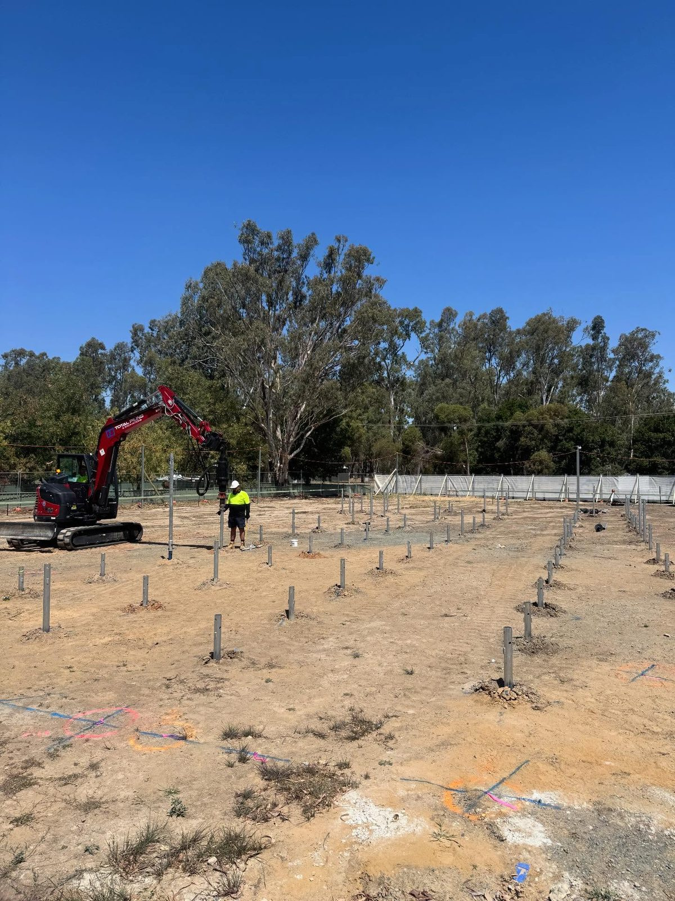

Sloping blocks
Level, engineered pile grids on the fall through Strathdale, Junortoun, Kennington and the surrounding hills.
Central Victoria
Certified screw pile foundations across Bendigo and central Victoria, including the variable goldfields ground the region is known for. AS2159 engineered, 100% Australian-made piles, full certification with every install.
The ground here
Bendigo is goldfields country, and that history is still in the ground. Weathered rock can sit close to the surface in one part of a site and drop away in another, and the older parts of town carry a long legacy of shallow workings, shafts and backfilled ground. It is genuinely variable material, and a foundation approach that assumes a uniform profile across a block is making an assumption the ground has not agreed to.
Screw piling handles that variability better than most methods, because the install itself is a measurement. Every pile is driven to the design torque specified by the engineer, and the torque reading is a live read on what that individual pile is bearing on. Where the profile changes across a site, the piles tell you, and the engineer adjusts depth or sizing against real numbers rather than a projection.
Add the sloping blocks through Strathdale, Junortoun and Kennington, and the heritage housing stock through the centre of town, and you have a region where minimal excavation matters. No concrete pour, no spoil to truck out, and installs that can be run around established gardens and existing structures.

The specs
Australian-made, load-certified, suited to most Victorian soil profiles.
Pile sizes
76 to 114 mm
Stocked standard range. Larger sizes upon request.
Load capacity
10,000 to 25,000+ kg
Per-pile for standard stocked range.
Soil suitability
Most profiles
Variable goldfields profiles, weathered rock at changing depths, and historic worked ground.
Service life
50, 75, 100+ years
When properly designed, installed to torque, and corrosion-rated for the soil profile.
Where it fits
The same piling method, scaled to the project. Residential through to civil and government.
Level, engineered pile grids on the fall through Strathdale, Junortoun, Kennington and the surrounding hills.
Additions and second-storey adds around established homes and mature gardens, with minimal excavation and no spoil.
Slab pads and footings across the growth areas out toward Huntly, Marong and Strathfieldsaye.
Retail pads, modular commercial buildings, signage and utility foundations, engineered to spec and audit ready.
Service area
Central Victorian coverage with the machinery and pile stock brought to site.
Greater Bendigo
All suburbs
Strathdale, Kennington, Junortoun, Eaglehawk, Epsom, Huntly, Marong and Strathfieldsaye.
Central goldfields
Town to town
Castlemaine, Maldon, Heathcote and Elmore, on the same variable worked ground.
Wider region
On request
Further into central and northern Victoria where the job scope justifies the travel. Send the site details.
How an install runs
A clear five-step process. Itemised quote, engineered to spec, certified on completion.
Email plans, engineering, and a soil report to sales@totalpiling.com.au, or call Rob or Tom.
Pile counts, sizes, depth, connection detail, certification - all on the page, all priced.
Pile sizing and depth confirmed against your engineer's design and the soil report. Adjustments handled before we book in, not on the day.
Crew arrives in Bendigo with the right machine and pile stock for the job. Install torque is recorded on each pile.
AS2159 certification and full documentation handed over. Engineered to spec, load-tested, ready to build on.
Common questions
Better than most options, because the install doubles as a measurement. Each pile is driven to the design torque set by your engineer, and that torque reading shows what the individual pile is bearing on. Where the profile changes across a site, which is common through Bendigo, the piles surface it during the install rather than after the build.
It gets referred back to the engineering. Shallow refusal is a normal outcome in goldfields country, and the engineer determines whether that depth satisfies the design or whether the pile position or sizing needs to change. It is resolved against the soil report and the design, not improvised on site.
Yes. Castlemaine, Maldon, Heathcote and Elmore all sit within the central Victorian service area, and we bring the machine, pile stock and certification with us. Send the site address through with the plans and we will quote it.
Every install is engineered to AS2159, the Australian Standard for piling design and installation. We record install torque on each pile against the engineer's design, perform load testing where it is specified, and hand over a certificate of compliance with the build documentation.
Where we work
Melbourne metro plus the regional centres. We bring the machine, the pile stock and the certification with us.
The main service page. Metro Melbourne and statewide coverage, residential through to government.
Murray floodplain ground, riverfront and rural builds, and the Campaspe corridor across to Moama.
Reactive basalt clay across the plains and sand over clay toward the Bellarine coast.
Heavy clay that stays wet through winter, plus historic worked ground in the older suburbs.
Deep alluvial Goulburn Valley soils, agricultural pads and food processing footings.
Latrobe Valley alluvial flats and made ground, residential through to industrial and plant.
Ready when you are
Send the plans, engineering, and soil report. We'll come back with a quote, no obligation.